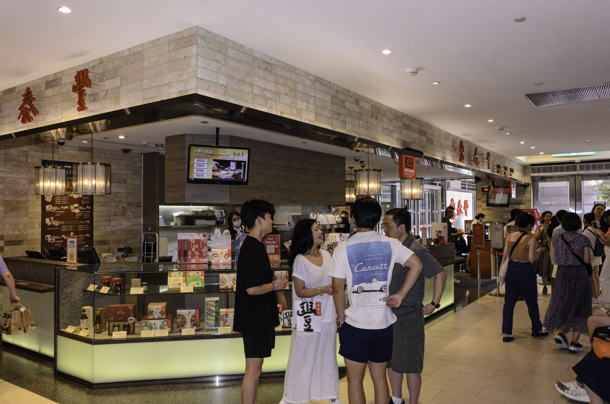
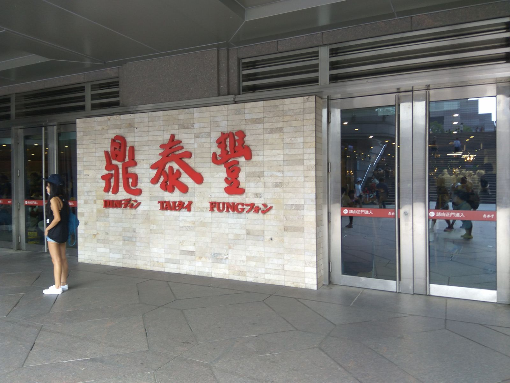

타이베이 101 딘타이펑 대기, 번호표 받고 전망대 다녀와도 될까?
번호표는 현장에서, 순서 확인은 휴대폰으로 — 인원별 호출 번호만 제대로 보면 기다리는 시간을 따로 쓸 수 있어요.
게시
"타이베이 101 딘타이펑 대기가 몇 시간이라는데, 번호만 받아 두고 전망대에 다녀와도 될까?" 주말 저녁엔 대기가 꽤 길어진다는 여행자 이야기가 많아요. 딘타이펑(鼎泰豐) 공식 사이트의 매장 안내와 '현장 대기정보 조회' 페이지, 타이베이 101 공식 안내를 바탕으로 101점 대기 방법을 2026년 10월 기준으로 정리해봤어요.
01 · 타이베이 101 딘타이펑 대기, 한눈에 보기
| 항목 | 101점 기준 (2026년 10월 공식 안내) |
|---|---|
| 위치 | 타이베이 101 쇼핑몰 지하 1층(台北市市府路45號B1), MRT 타이베이101/세계무역센터역 4번 출구 |
| 대기 방식 | 매장 앞에서 현장 번호표를 받는 방식 |
| 순서 확인 | 공식 '현장 대기정보 조회' 페이지·딘타이펑 앱 — 예상 대기 시간, 번호 발급 중지 예상 시간, 인원별 호출 번호 |
| 번호 발급 마감 | 대기 인원이 많으면 마지막 번호 발급이 앞당겨질 수 있음 |
| 영업시간 | 방문 전 구글맵에 등록된 영업시간을 확인하세요 |
핵심은 번호표는 직접 받아야 하고, 그다음부터는 휴대폰으로 순서를 볼 수 있다는 점이에요. 공식 조회 페이지에서 지점을 '101점'으로 고르면 지금 기다리는 시간(분)과 오늘 번호 발급을 멈출 예상 시각이 나와요. 공식 앱 소개에도 호출 번호를 보여주니 자리에서 기다리지 않아도 된다고 적혀 있습니다.

02 · 딘타이펑 대기 조회, 인원별 번호 보는 법
가기 전에 예상 대기부터 출발 전에 조회 페이지에서 101점 예상 대기 시간과 번호 발급 중지 예상 시각을 보세요. 저녁 늦게 가면 영업이 끝나기 전에 번호 발급이 먼저 끝날 수 있어요.
번호는 인원 그룹별로 따로 불러요 101점 조회 화면은 1~2명, 3~4명, 5~6명, 7명 이상 칸으로 나뉘어 호출 번호를 보여줘요. 내 번호표의 인원 그룹 칸 숫자만 보면 됩니다.
포장 번호는 따로 같은 화면에 포장(外帶) 호출 번호가 따로 떠요. 매장 식사 번호와 헷갈리지 않게 보세요.
번호를 놓쳤을 때는 직원에게 호출 때 자리에 없으면 어떻게 되는지는 번호표를 받을 때 직원에게 물어보세요. 그 답을 기준으로 돌아올 시간을 잡으면 안전해요.
03 · 번호표 받고 101 전망대·쇼핑몰 둘러보기
전망대 매표소는 쇼핑몰 5층 타이베이 101 공식 안내 기준 전망대는 89층이고, 표는 쇼핑몰 5층 전망대 매표소에서 사요. 공식 온라인 예매 사이트도 있어요. 요금은 방문 전 공식 안내를 확인하세요.
예상 대기가 넉넉할 때만 올라가기 전망대도 붐비는 시간에는 줄이 생길 수 있어요. 조회 화면의 예상 대기 시간이 넉넉할 때 올라가고, 짧다면 같은 건물 쇼핑몰을 도는 편이 마음 편해요.
호출 번호가 가까워지면 미리 복귀 인원 그룹 칸 번호가 내 번호에 가까워지면 지하 1층으로 내려오세요. 전망대 엘리베이터와 몰 안 이동에도 시간이 걸려요.
일행이 나눠 움직이기 한 명은 매장 근처에 남고 나머지가 둘러보면 번호를 놓칠 걱정이 줄어요.

04 · 대기가 너무 길면 신이 지역 다른 지점도
같은 조회 페이지에서 지점 비교 조회 페이지에서 지점만 바꾸면 다른 매장의 예상 대기도 볼 수 있어요. 101 가까이에는 A4점(신광미츠코시 신이 A4관 지하 2층)과 A13점(위안바이 신이 A13 1층)이 있어요.
A4·A13점은 시청역 쪽 공식 안내 기준 두 곳 모두 MRT 반난선 스정푸(市政府)역 3번 출구에서 걸어서 3~5분 거리예요. A13점은 주말·공휴일에 1층 북쪽 문(르 메르디앙 호텔 옆)에서 미리 대기를 받는다고 안내하고 있어요.
포장 주문이라는 선택지 딘타이펑 공식 매장 안내에는 101점 포장 전용 온라인 주문 링크가 있어요. 메뉴 가격은 방문 전 공식 안내를 확인하세요.
전망대에 아이와 함께 올라갈 계획이라면 타이베이 101 전망대 아이 요금 글을 먼저 보세요. 101 주변 볼거리는 타이베이 꼭 가볼 곳에 모아 두었어요. 대기가 너무 길어 다른 곳을 찾는다면 타이베이 딤섬 맛집 목록과 타이베이 맛집 지도에서 고르고, 딘타이펑 대신 들렀다는 후기가 있는 Hi-Lai 상하이 딤섬이나 101 근처 써니힐처럼 상세 페이지에서 위치를 확인해 보세요.
지도에서 타이베이 딤섬 맛집도 확인해보세요
대기가 길 때 갈 만한 근처 딤섬집을 지도에 찜해두세요.